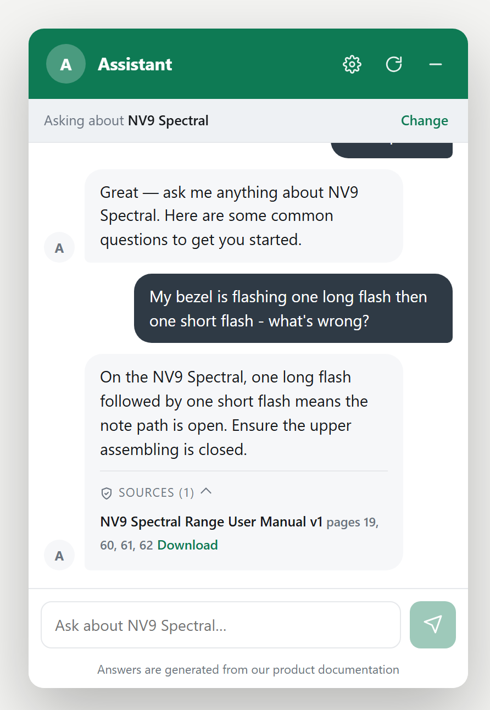
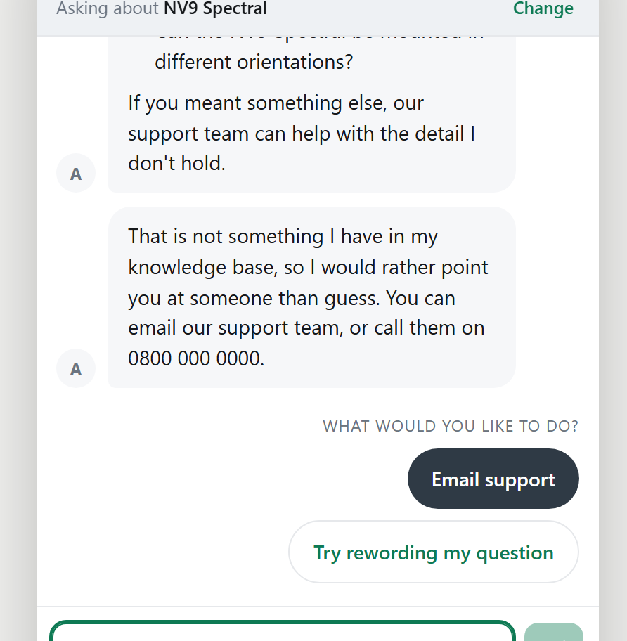

01GroundedOps · RAG in production
Support answers you can trace to the page.
A retrieval-augmented assistant over hardware manuals, live for 300+ customer accounts a week. Every sentence is checked against its source before it is shown.
- 300+accounts / week
- 140+regression tests
- 34case eval harness
- 8/8claim checks after the gate fix
- 8agent QA departments
Read the evidence
Python · FastAPI · React · ChromaDB · Ollama · Docker · DeepSeek / OpenAI / Claude
How it works. Customers ask hardware questions through an embeddable widget, and the answer has to match the manual. Retrieval combines BM25 and dense embeddings with reciprocal rank fusion, a sigmoid-calibrated cross-encoder reranks the results, and an NLI entailment check verifies each sentence. Anything it can't support goes to the support team, with the sources attached.
Catching a silent failure. Evaluation exposed a verifier reading the classifier's neutral class instead of entailment: invented claims were passing at 0.99 confidence and correct ones were refused at 0.02, while every surface metric looked healthy.
Fixing the class index and premise granularity took a true/false claim battery from three wrong verdicts to 8 out of 8.
Choosing fixes on evidence. When two fixes competed for a retrieval fault, I A/B-tested both on isolated instances and shipped the narrower one, which regressed nothing.
An agent QA office around it. Scheduled agent departments write blind test questions from the manuals, grade the assistant's answers, triage failures and propose fixes on separate branches. The builder never sees the held-out questions, a merge gate decides what ships, and a human approves every merge. On its first morning the gate rejected one of the office's own fixes. Watch it run or read the code.

